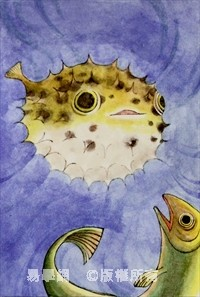
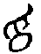
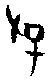
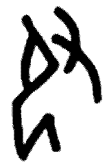
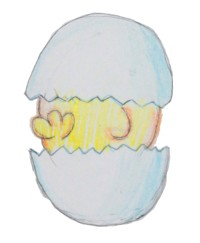
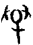
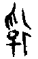
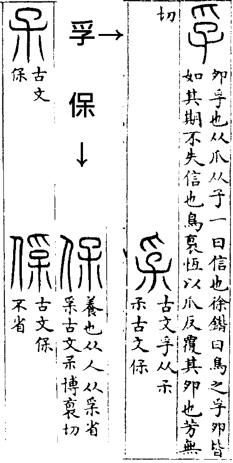

䷼ 中孚卦 風澤中孚
中孚，豚魚吉，利涉大川，利貞。初九，虞吉，有它不燕。九二，鳴鶴在陰，其子和之；我有好爵，吾與爾靡之。六三，得敵，或鼓或罷，或泣或歌。六四，月幾望，馬匹亡，无咎。九五，有孚攣如，无咎。上九，翰音登于天，貞凶。
| 
彖曰：中孚，柔在內而剛得中，說而巽，孚，乃化邦也。豚魚吉，信及豚魚也。（圖：小配） |
【卦名】
今本：中孚 帛書：中復 秦簡：中 清華：中 海昏簡：中俘［？］
《說文》：「中，內也。」「孚，卵孚也，从爪从子。一曰信也。」
中為內，引申為人之內心。孚為信，中孚即內心有信，孔穎達說的：「信發於中，謂之中孚。」這也是傳統對於中孚卦的通解。
中的甲骨文像一立起的旗幟，為中央、中間之義。卜辭中有「立中」一辭，講的就是樹立此旗幟，又「立中」有時又會談到風，因此古文字學家認為可能此旗幟是風向測量之用。如：「立中允無風。」
唐蘭：「古時有大事，聚眾於曠地先建中焉，群眾望見中而趨赴，群眾來自四方則建中之地為中央矣。」徐中舒認同唐蘭之看法，並以中為旂幟：「立中即立旂，立中可以聚眾，又可借以觀測風向。」
《尚書》「建中」、建用皇極的政治思想或者源自於此。
孚的甲骨文字源有三說，一是，為「孵卵」的孵，二是從爪從子的，為「俘虜」的俘。三是（𠬝），為服的初文，服從之義。
劉興隆《新編甲骨文字典》以甲骨文的為孵的本字，像禽鳥以爪扒蛋之狀，會孵卵之義，此即《說文》所謂的「卵孚」。揚子《方言》「雞伏卵而未孚」亦取孵卵之義。
第二說以孚的甲骨文為或，以單手或雙手抓住小孩，唯字或從爪從子，或從又從子，有上從雙又。又即古文的手。與（俘）通，亦是俘的本字。偏旁彳為追趕之義，後彳變為人。這也是比較主流的說法，持此說者如徐中舒，李孝定，香港中文大學漢語多功能字庫亦採用此說。
以（服）為孚者主要為郭沫若之說：「象以手捕人之形，即古孚字（古金文中俘字均作孚，从爪从子），服字从此。」徐中舒《甲骨文字典》𠬝字解釋說：「從又從卩，象以手壓抑跪伏之人，會降伏、制服之意。當為制服之服初文。」其釋義：「一用作俘，戰爭田獵中擒獲之人。二、人牲。」
李孝定則對此說持疑。
另有古文字學家以《說文》孚、保兩字的古文互證認為，孚即保：「𤓽，古文孚，从𡥀。𡥀，古文𠈃。」「保，養也，从人从𤓽省。𤓽，古文孚。𣎼，古文保。𠊻，
古文保不省。」
孚字通解的孚信義，可能是從「孵」引申而來。徐鍇《說文》注：「鳥之孚卵皆如其期，不失信也。鳥袌恆以爪反覆其卵也。」依徐鍇說法，因鳥卵孵化的時間都很準確而可信，所以孚就引申為「信」，可信、可靠、信驗，或信息、符信的意思。而這也是兩千年來對「孚」字的傳統解釋。
《周易》中「孚」普遍解釋為信，誠信、信驗之義。如《雜卦傳》：「中孚，信也。」《序卦傳》：「節而信之，故受之以中孚。有其信者必行之。」
但除做為孚信，孚也可作為俘虜，如中孚六三「得敵」至九五「有孚攣如」可能是在講俘虜之事。
中孚卦卦名清華簡作「中」，帛書作「中復」，學者或認為是「中孚」之假借。今本「孚」字帛書《周易》皆作「復」。鄧球柏則以「中復」為正，謂：「中庸，中道而復，復歸於中。」
王家台秦簡影像資料未公布，王寧解讀為「中」，朱興國《三易通義》引作「中」。
海昏簡《易占》中孚卦：「說下巽上，中〃俘〃者中俘。」「說下巽上，中〃俘〃」為李零補釋加入，而「中俘」則是對於中孚卦義的解釋，並非卦名。因此嚴格來說，《易占》的中孚卦卦名未詳。
雖然《易占》中多有以卦名自解卦義的例子，如乾卦「建者建也」、兌卦「說者說也」，但也有很多不以卦名自解的，如震卦「侲者恐懼也」，艮卦「根者止也」。另也有卦名釋義與卦名很近似的例子，如「明夷者明荑也」，「同人。人同，天下一心也」。因此，該卦卦名理應從缺，不宜將其定為「中俘」。但就《易占》以中俘解釋中孚卦，可能就是以孚為俘義，中亦有得義，中俘即得俘。
高亨《周易古經今註》對於中孚卦卦義近於傳統解釋，以中為忠，孚為信，中孚即忠信。但對於卦爻辭中「孚」字卻有很多不同註解，或作為「俘」，如在後來的校訂本裡需卦「有孚」引林義光：「孚即俘之古文，象爪持子。」或作為罰，如隨卦九四「有孚在道」註曰：「孚讀為浮，罰也。」未濟「有孚于飲酒」解釋為有罰於飲酒。（按：《周易古經今註》舊版在需卦對於孚字探索很多，並將需卦的有孚解釋為罰，但在後來的校訂本已無相關論證。）
李鏡池以中為心，孚為信，中孚即心中有誠信。但在其他經文中又將孚註解為俘，如需卦：「孚，俘之本字。从爪子，本義為俘人。」
李零以孚為符，中孚即符合之義：「我懷疑，孚訓信，實由符合之義引申，這裡的『中孚』，只是一個上下符合的卦。」香港中文大學漢語多功能字庫：孚音近通作「附」，《集韻．虞韻》：「孚，《說文》：『卵孚也。』古作附。」
【卦義】
誠信、信實。信驗、感應。虛心於內，誠實於外。
孚為信驗，誠信、可信，應驗，因此中孚卦有兩重意義：一是忠孚，忠為誠，孚為信，中孚即誠信；二是衷孚，誠信發乎內心。
《象傳》：「澤上有風，中孚，君子以議獄緩死。」中孚大象為離，離為法網為用獄。中間兩爻為陰為虛，外面上下各有兩畫陽爻為實，因此卦形為虛心於內，誠實於外之象。內兌悅而外順巽，悅而能漸入，此戒君子以誠信感化他人。上巽木下兌澤，為巽木浮於澤水之上，舟行水上，所以卦辭說利涉大川，《彖傳》說：「利涉大川，乘木舟虛也。」
中孚是繼節卦而來，《序卦》曰：「節而信之，故受之以中孚。」節制之後然後才開始有信任，所以繼之以中孚。節亦可解釋為符節、瑞信，古代之信物，因此說「節而信之」。
中孚與小過為相錯的一對卦，中孚外實內虛象卵孵，中孚即雞卵孵化，引申為信；小過則是卵已孵成，為飛鳥，外面羽毛彭鬆而內實。
得中孚卦，雖然暗藏危機，但只要能虛心、老實做事，立下信譽，逐漸感動人心，就能度過難關，求得亨通。但中孚之亨通，是屬於長遠性的，並非短期可成。
六爻以得中在內最得中孚之道，九二與九五剛中實誠而相應，九二曰「鳴鶴在陰，其子和之；我有好爵，吾與爾靡之」，九五曰「有孚攣如」。初九居最內之位，與六四相應。自守孚誠則吉，求應於它則不燕，曰「虞吉，有它不燕」，六四居外而不得中，曰「月幾望，馬匹亡」。六三過中而不當位，又近於外，與失信之上九相應，上九「翰音登于天」，失信最甚，此六三之「或鼓或罷，或泣或歌」。
中孚，豚魚吉，利涉大川，利貞。
《彖》曰：中孚，柔在內而剛得中，說而巽，孚，乃化邦也。豚魚吉，信及豚魚也；利涉大川，乘木舟虛也；中孚以利貞，乃應乎天也。
《象》曰：澤上有風，中孚，君子以議獄緩死。
內心虔誠，即使以簡單的豬和魚當牲禮亦可得吉。利於涉水渡大河，利於貞定。
豚與魚分別指豬肉和魚，是祭祀所用的牲禮中最為簡薄的。雖然簡薄，但是祭祀重在虔誠。因為虔誠，所以為吉。利涉大川，利於涉險。中孚有舟楫行水之象，所以能夠渡險。
渙卦與中孚卦皆曰「利涉大川，利貞」，蓋因兩卦都有行舟濟險之象，渙所濟者為坎險，中孚所濟者兌澤之毀折。此與需「貞吉，利涉大川」，大畜「利貞，不家食，吉，利涉大川」，求貞吉之後再涉大川者不同，需者待也，大畜者蘊畜，所待所畜者貞吉。
【字義】
豚魚吉：《說文》：「豚，小豕也。从彖省，象形。从又持肉，以給祠祀。」豚為小豬，供給祭祀之用。豚魚吉，即祭祀用豚、魚為吉。但傳統多數以《彖傳》「信及豚魚」來註解，意思為其孚信及於豚魚、感通於豚魚。但諸家對豚魚的詮釋不盡相同：一、豚和魚是最難以感動的生物，而孚信能感動到豚魚，以喻孚信之真誠無所不及。這也是自古支持者最多的見解，如王弼、虞翻、程頤、朱熹。二、豚魚比喻小老百姓，為明君所供養。鄭玄：「豚魚以喻小民也，而為明君賢臣，恩意所供養，故吉。」三、豚魚即江豚，風生則至，其出有信。孚信有如豚魚之隨風，此說源自俞琰：「豚魚，江豚也。兌為澤，巽為風，澤上之風，來必有兆，江豚出而吹浪，乃澤上有風之兆。人之行事，信如豚魚則吉也。」來知德亦用此說。四、豚與魚為薦禮中最簡單者，言有孚信則薦禮雖薄，也可得保祐。高亨引王引之見解總結說：「豚魚乃禮之薄者，豚魚吉，猶言雖豚魚之薦亦吉也。」
王引之《經義述聞》：豚魚者，士庶人之禮也。《士昏禮》：特豚合升去蹄，魚十有四。《士喪禮》：豚合升，魚鱒鮒，九朔月，奠用特豚魚腊。《楚語》：士有豚犬之奠，庶人有魚炙之薦。」王制：庶人夏薦黍麥以魚黍以豚。豚魚乃禮之薄者。然苟有中信之德，則人感其誠而神降知福。故曰豚魚吉，言雖豚魚之薦，亦吉也。
議獄緩死：議獄為議論可能的冤獄，緩死則是暫緩死刑的執行。上天有好生之德，君子因以避免冤獄與冤死。京氏《五星占》曰：「人君承用節度，即雷風以節；暴行威福，則雷霆擊人。其救也，議獄緩死，則災消矣。」依京氏，議獄緩死可以消災。
初九，虞吉，有它不燕。
《象》曰：初九虞吉，志未變也。
深思為之預防則吉，因為有蛇會讓人不安。
中孚有中孵之義，畜養禽鳥最怕蛇來吃蛋，蛋被吃則無以孵化。有大蛇當然讓人不安，因此能有虞慮豫防為吉。
傳統多依王弼，註解為：用心專一則吉，心不專一、旁騖於他則不安。《象傳》「志未變也」，用心專一，所以志向不變。
【字義】
虞：《說文》：「虞，騶虞也，白虎黑文，尾長於身，仁獸，食自死之肉。」騶，音鄒。虞原是仁獸，但多作為猜度、思慮用。其可能字義：1.思慮、考慮，度量、預備。 朱熹作思慮解。2.憂慮。3. 安，荀爽作此解。4. 王弼引申為專一，應是第一義的引申。5. 虞祭。李光地採用此義，但兼取虞安之義。虞吉，舉行虞祭為吉。6. 虞人，守山林的人。屯六三「即鹿无虞，惟入于林中」，虞兼有思慮與虞人之義。
有它：坊本或作「有他」，當作「有它」。《說文》：「它，虫也。从虫而長，象冤曲垂尾形。上古艸居患它，故相問無它乎。」它，本義為大蟲，即蛇，有蛇即有意外。它古字通虫，為大蛇。上古草居，很怕遇到蛇，問候人平安無事會說「無它」，沒有蛇。反過來「有它」就是有意外，遇到意外，不平安。它從蛇，引申為意外，又引申為第三人稱，其它的它。卜辭中用作蛇，也已經有用作其它的它。王弼引申為心有它用，由它即用心不專一，相對於「虞」的專一。比卦初六「有它吉」，大過九四「有它吝」。
不燕：不安。燕，安也。燕亦通宴，宴會的意思。可為宴會，或為安寧。卜辭中燕用作曣，晴天，和雨對貞。有它不燕，遇大蛇或意外而無法前往宴會，即半途而返之意。或者是有意外而讓人不安，心中有陰影（不曣）。
九二，鳴鶴在陰，其子和之；我有好爵，吾與爾靡之。
《象》曰：其子和之，中心願也。
《繫辭》：「鳴鶴在陰，其子和之，我有好爵，吾與爾靡之。」子曰：「君子居其室，出其言善，則千里之外應之，況其邇者乎。居其室，出其言不善，則千里之外違之，況其邇者乎。言出乎身，加乎民。行發乎邇，見乎遠。言行，君子之樞機，樞機之發，榮辱之主也。言行，君子之所以動天地也，可不慎乎。」
母鶴在看不到的陰暗之處鳴叫，小鶴與其相呼應。我有好的酒杯，和你一起共飲美酒。
此比喻人立心誠篤，就會得到感應與共鳴，就如母鶴與小鶴心靈自然可以相通。「我有好爵，吾與爾靡之」，比喻人德不孤，必有鄰。
《繫辭》所引孔子註大意為：君子閒居在家，說出來的話如果美善，那麼就連千里之外都會和他相應和，更何況是近在身邊呢？如果閒居在家，說出來的話不善，那麼千里之外都會反對他，更何況是近在身邊呢？言語是出於君子之身，但卻是施加在人民身上；君子的行為是從自己身邊近處而發生，但其作用卻立即顯現在遠方。言行，是君子的樞機。樞機的發動，是榮辱的主宰。言行，君子所以動天地，可以不謹慎嗎？」
【字義】
陰：《說文》：「陰，闇也，水之南，山之北也。」陰原為地理上的背陽面，低而陰暗處，山北水南。陽則為向陽面，高而明亮之處，山南水北。陰由陰暗處引申為幽隱、看不到的地方。這是《易經》經文唯一的陰陽字，但經文中無陽字。
爵：通雀，古代的酒杯，象雀形。後來引申為爵位。《說文》：「爵，禮器也，象爵之形，中有鬯酒，又持之也。所以飲。器象爵（雀）者，取其鳴節節足足也。」段注：「節節足足，雀音如是......首尾喙翼足具見，爵形即雀形也。」虞翻：「離為爵，爵，位也。」
靡：散，引申為共。《說文》：「靡，披靡也。」依段注，披靡當作柀靡：「寫者譌从手。柀靡，分散下垂之皃。易中孚九二曰：吾與爾靡之。孟、王皆曰：散也。」《周易集解》引孟喜：「好，小也。靡，共也。」干寶：「靡，散也。」虞翻：「靡，共也。」至程朱，將靡解釋為繫戀、係慕。程頤：「好爵我有，而彼亦係慕。」朱熹：「靡，與縻同，言懿德人之所好。故好爵雖我之所獨有，而彼亦繫戀之也。」《日講》：「好爵，懿德也。靡，與縻同，猶繫戀也。」
六三，得敵，或鼓或罷，或泣或歌。
《象》曰：或鼓或罷，位不當也。
得到了敵人，讓人不知要鳴鼓進攻還是要停戰作罷；不知要悲哀地哭泣還是高歌一曲。
【字義】
得敵：得到敵人，即戰爭擄獲了敵人，或遇到了敵人。或解釋為得到了敵手，有了對手。得，得到、獲得、取得。敵，《說文》：「仇也。」敵為仇敵之義，又引申為仇匹、匹敵、敵對。因此通六四「馬匹亡」之匹。王弼言三、四兩爻：「對而不相比，敵之謂也。」孔疏：「六三與四，俱是陰爻，相與為類。」此似乎取匹敵、匹類之義，並以六四為六三之敵。程頤則以上九為六三之敵對者，與王弼不同：「敵，對敵也，謂所交孚者，正應上九是也。」
或鼓或罷：或擊鼓進攻，或停鼓作罷。言進退失據，不知如何是好。鼓為擊鼓，引申為鼓舞、鼓動之義。罷為罷免、休止之義。《說文》：「遣有辠也，从网能，言有賢能而入网，而貫遣之。」段注：「引伸之為止也，休也。《周易》：或鼓或罷。《論語》：欲罷不能。」
六四，月幾望，馬匹亡，无咎。
《象》曰：馬匹亡，絕類上也。
月亮就要變滿月了，馬匹卻丟失不見，沒有罪咎。
馬匹亡，馬匹走失，或者馬無法匹配。月幾望為未近圓而未圓，為不利出征之象。小畜上九「月幾望，君子征凶」。歸妹卦曰「征凶，无攸利」，六五曰：「帝乙歸妹，其君之袂，不如其娣之袂良。月幾望，吉。」六五之吉，乃歸妹之吉，關於征戰，當從卦辭說的「征凶」。《朱子語類》言漸卦：「今術家擇日，利婚姻底日，不宜用兵；利相戰底日，不宜婚嫁，正是此意。蓋用兵則要相殺相勝，婚姻則要和合，故用不同也。」月幾望為利於婚姻，不利於出征。
【字義】
月幾望：月近圓而未圓。望，月圓，比喻圓滿。月幾望，事情已近圓滿，但仍未圓滿。小畜言「月幾望，君子征凶」，此言「月幾望，馬匹亡」，月幾望為不利出征之象。《開元占經》引《河圖帝覽嬉》曰：「月未當望而望，是謂趣兵，以攻人城者大昌。當望不望，以攻人城者有殃，所宿之國，亡地。」月幾望，是月當望而未望，為出征有殃之象，故曰征凶。出征不宜，出行亦然。
馬匹亡：亡為遺失，馬匹亡即馬匹遺失，另一解釋為馬無法成對。匹，《說文》：「四丈。」《爾雅》：「仇，讎，敵，妃，知，儀，匹也。」「仇，偶，妃，匹，會，合也。」匹原為計量單位，引申為匹配、配合，亦通「敵」之敵對義，呼應六三的「得敵」。傳統注解認為，古時拉馬車的馬兩兩成對稱「匹」，馬匹即以兩隻馬成一對。「馬匹亡」言馬隻不合而無法配成對，也就是六三說的「得敵」，馬既然無法成對，當然也就無法合力拉車。虞翻：「乾坎兩馬匹，初四易位，震為奔走，體遯山中，乾坎不見，故馬匹亡。｣程頤：「四與初為正應，匹也。古者駕車用四馬，不能備純色，則兩服兩驂各一色，又小大必相稱，故兩馬為匹，謂對也。」朱熹：「馬匹，謂初與己為匹。四乃絕之而上以信於五，故為馬匹亡之象。」
絕類上：絕其同類而上。同類，指三，三與四俱為陰，因此曰類。上，指九五，六四上承九五，與九五比應。王弼：「類謂三，俱陰爻，故曰類也。」孔穎達：「絕三之類，不與三爭，而上承於五也。」程頤：「絕其類而上從五也。類，謂應也。」程頤以類為應，那麼類指的是初九。但以類為應於文義不通。
九五，有孚攣如，无咎。
《象》曰：有孚攣如，位正當也。
以誠信相互牽繫，沒有罪咎。或：有俘擄，繫綁一起，沒有罪咎。
此言彼此誠信相待，互相信任，能夠心手相連。
中孚六爻，唯九五言「孚」，胡炳文：「六爻不言孚，惟九五言之，九五孚之主也。」李光地：「此爻是《彖》所謂孚乃化邦者也，人君之孚，與在下者不同。」
小畜九五「有孚攣如，富以其鄰」。
【字義】
攣：音巒，相繫，連繫，牽繫。攣為繫綁並牽引之。《說文》：「攣，係也。」段注：「係者絜束也。易小畜：有孚攣如。馬曰：連也。虞曰：引也。攣者，係而引之。」王弼：「攣如者，繫其信之辭也。」孔穎達：「攣如者，相牽繫不絕之名也。」虞翻：「孚，信也。謂二在坎為孚，巽繩艮手，故攣。」程頤引申為固結：「人君之道，當以至誠感通天下，使天下之心信之，固結如拘攣然，則為无咎也。」
有孚攣如：傳統註解，君臣或朋友以孚信固結緊繫其心。孚亦用作俘，有孚攣如為俘虜一個個綁在一起。此繼六三「得敵」而來，「得敵」亦可解釋為捕獲敵人，即俘虜。
上九，翰音登于天，貞凶。
《象》曰：翰音登于天，何可長也。
祭祀用的雞飛上了天，堅定則凶。
此言不要把反常的現象當做常態，以此為堅持當然為凶。上九處中孚的頂點，過中而不當位，為孚不由衷，言過其實者。雞並不會飛，現在竟然飛上天，這是反常的現象，不可長久，所以《象傳》說「何可長也」。如果以此為正，當然為凶。
或曰：雞鳴之聲高飛而登於天，以此正定則凶。諷刺人唱高調，言過於實，虛浮而不可信。雞在古代被視為知時之物，其報時可信。今其音高飛而登於天，失其時而不可信矣。
此通小過卦的「飛鳥遺之音，不宜上，宜下」。
《詩．小宛》：「宛彼鳴鳩，翰飛戾天。」〈四月〉：「匪鶉匪鳶，翰飛戾天。」
【字義】
翰音：祭祀用的雞稱翰音，《禮記．曲禮》：「凡祭宗廟之禮，牛曰一元大武，豕曰剛鬣，豚曰腯肥，羊曰柔毛，雞曰翰音......。」孔穎達：「翰，長也，雞肥則其鳴聲長也。」虞翻：「巽為雞，應在震，震為音。翰，高也。巽為高，乾為天。故翰音登于天。失位，故貞凶。《禮》薦牲，雞稱翰音也。」朱熹：「雞曰翰音，乃巽之象。雞非登天之物，而欲登天，信非所信。」 雞因聲音很長，所以曰翰音。翰音或作鶾音，《說文》：「鶾，雉肥鶾音者也。从鳥倝聲。魯郊以丹雞祝曰：以斯鶾音赤羽，去魯侯之咎。」段玉裁注：「此引魯郊禮文，證翰音之為肥雞也。各本翰作鶾，誤。」可見古代有以翰音郊祭以去咎的習俗，翰音登於天，則祭不成而得咎矣。或以翰為高飛，翰音為高飛、不實之音，虛華而不實的聲音。王弼：「翰，高飛也。飛音者，音飛而實不從之謂也。」程頤：「翰音者，音飛而實不從。」《詩．小宛》：「宛彼鳴鳩，翰飛戾天。」〈四月〉：「匪鶉匪鳶，翰飛戾天。」翰皆取高飛之義。《說文》：「翰，天雞赤羽也，从羽倝聲。《逸周書》曰大翰，若翬雉，一名鷐風。周成王時蜀人獻之。」翰為天雞，那麼翰音為天雞之聲音。《日講》：「翰是羽。翰音，言鷄鳴必振其羽也。」「翰音本非登天之物，而强欲登于天。」此又另成一義。
【彖傳】
中孚，柔在內而剛得中，說而巽，孚乃化邦也。豚魚吉，信及豚魚也；利涉大川，乘木舟虛也；中孚以利貞，乃應乎天也。
柔在內而剛得中：兩柔爻居中於內。《周易》有以全卦六爻直接取象者，例如鼎六爻象鼎之形，再如頤卦、噬嗑之食，以及小過之飛鳥。夬卦《彖傳》「揚于王庭，柔乘五剛」也是直接看六爻之象。中孚的柔在內也是以六爻所構成的卦象而言，以初、二以及五上為外，三四為中為內。益卦六三和六四兩爻爻辭皆曰「中行」，亦是用此觀象法。剛得中，九二和九五，兩剛爻皆得中。
說而巽，孚乃化邦也：以二體卦德解釋卦義。下兌上巽，悅而能入而有孚信之義，因此可以感化邦國。《注疏》與《集解》皆讀作「說而巽孚，乃化邦也」。此依程朱讀法。
豚魚吉，信及豚魚也：孚者信也。信及豚魚，孚信及於君子和小人。《周易》以豚象徵君子，魚象徵小人。遯卦既是講君子隱退，又講豚走脫而繫豚之事。遯六二與姤初六皆有繫豚豕之義，因巽為繩，乾為君子為豚為豕。《說卦》以坎為豕，但就經文來看，應該乾為豕為豚。以魚為民的例證，姤九二包有魚，九四包无魚，講的是兩爻與初六的關係。九二與初六比應為包有魚，九四與六雖遠應，但魚已為九二所得，因此對九四來說為遠而未得之象，為包無魚。魚為民，因此九四《象傳》說｢遠民也｣，經文說｢起凶｣。起凶為征凶之義。因為遠民，所以征凶。剝卦六五曰｢貫魚以宮人寵｣，上九說｢君子得輿｣，輿者眾也民也，得輿即得魚、得民心，因上九得六五所貫之魚，得民最眾。
利涉大川，乘木舟虛也：上巽木，下澤水。水上之木為舟楫，全卦六畫呈中虛之象，因此曰｢乘木舟虛｣。渙卦下坎水，上巽木，亦是乘木舟行之象，《彖傳》說｢利涉大川，乘木有功也｣。反之，大過卦為巽在澤下，《大象》說｢澤滅木｣，此乃沉船之象，因此上六曰｢過涉滅頂｣。井卦巽木在坎水下，入水而出水，無行舟之功，因此《彖》曰｢未有功也｣。